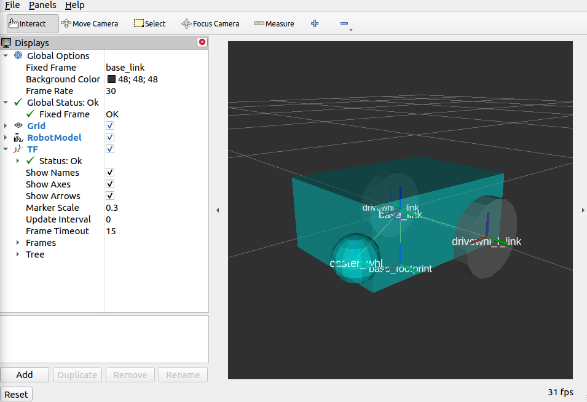

设置URDF
在本指南中，我们将为一个简单的差动驱动机器人创建统一机器人描述格式（Unified Robot Description Format，URDF）文件，以便让您亲自体验使用URDF的工作。我们还将设置机器人状态发布器并在RVIZ中可视化我们的模型。最后，我们将向机器人的URDF添加一些运动学属性，以便为仿真目的做准备。这些步骤是为了代表您的机器人的所有传感器、硬件和机器人变换，以供导航使用。
参见
本教程中的完整源代码可以在 navigation2_tutorials 存储库的 sam_bot_description 包中找到。请注意，该存储库包含完成本指南中所有教程后的完整代码。
URDF和机器人状态发布器
如前面的教程中所讨论的，Navigation2的一个要求是从 base_link 到各种传感器和参考坐标系的变换。这个变换树可以是一个简单的树，只有一个链接从 base_link 到 laser_link，也可以是一个由位于不同位置的多个传感器组成的树，每个传感器都有自己的坐标系。创建多个发布者来处理所有这些坐标系的变换可能会变得繁琐。因此，我们将使用机器人状态发布器包来发布我们的变换。
机器人状态发布器是ROS 2的一个包，它与tf2包交互，发布可以直接从机器人的几何和结构中推断出的所有必要转换。我们需要提供正确的URDF给它，它将自动处理转换的发布。这对于复杂的转换非常有用，但对于较简单的转换树也是推荐的。
统一机器人描述格式（Unified Robot Description Format，URDF）是一个表示机器人模型的XML文件。在本教程中，它主要用于构建与机器人几何相关的变换树，但它还有其他用途。一个例子是如何在RVIZ中可视化机器人模型，RVIZ是ROS的一个三维可视化工具，通过定义诸如材料和网格等可视化组件来实现。另一个例子是URDF如何用于定义机器人的物理属性。这些属性然后被物理模拟器（如Gazebo）用于模拟机器人在环境中的交互。
URDF的另一个重要特性是它还支持Xacro（XML宏），帮助您创建一个更短、更易读的XML来定义复杂的机器人。我们可以使用这些宏来消除URDF中重复的XML块的需要。Xacro还可以用于定义可以在整个URDF中重用的配置常量。
参见
如果您想了解更多关于URDF和机器人状态发布器的信息，我们建议您查看官方的 URDF文档 和 机器人状态发布器文档。
设置环境
在本指南中，我们假设您已经熟悉ROS 2以及如何设置开发环境，因此我们将快速浏览本节中的步骤。
让我们从安装一些在本教程中将使用的额外ROS 2包开始。
sudo apt install ros-<ros2-distro>-joint-state-publisher-gui
sudo apt install ros-<ros2-distro>-xacro
接下来，创建一个用于您的项目的目录，初始化一个ROS 2工作空间并为您的机器人命名。我们将称之为 sam_bot。
ros2 pkg create --build-type ament_cmake sam_bot_description
编写URDF
参见
本节旨在为您提供一个适用于初学者的URDF构建机器人的简介。如果您想要了解更多关于URDF和XAcro的信息，建议您查阅官方的`URDF文档 <http://wiki.ros.org/urdf>`__
既然我们已经设置好了项目工作空间，让我们直接开始编写URDF。下面是我们将要尝试构建的机器人的图像。


首先，在``src/description``目录下创建一个名为``sam_bot_description.urdf``的文件，并将以下内容输入作为文件的初始内容。
1<?xml version="1.0"?>
2<robot name="sam_bot" xmlns:xacro="http://ros.org/wiki/xacro">
3
4
5
6</robot>
注解
下面的代码片段应该放置在``<robot>``标签之间。我们建议按照本教程介绍的顺序添加它们。我们还包含了一些行号，以便大致指导您在何处输入代码。实际文件中的行号可能与本指南中出现的行号不同，这取决于您使用空格的方式。还请注意，行号假设您按照指南中的代码顺序输入。
接下来，让我们使用XAcro属性定义一些常量，这些常量将在整个URDF中重复使用。
4 <!-- Define robot constants -->
5 <xacro:property name="base_width" value="0.31"/>
6 <xacro:property name="base_length" value="0.42"/>
7 <xacro:property name="base_height" value="0.18"/>
8
9 <xacro:property name="wheel_radius" value="0.10"/>
10 <xacro:property name="wheel_width" value="0.04"/>
11 <xacro:property name="wheel_ygap" value="0.025"/>
12 <xacro:property name="wheel_zoff" value="0.05"/>
13 <xacro:property name="wheel_xoff" value="0.12"/>
14
15 <xacro:property name="caster_xoff" value="0.14"/>
以下是对这些属性在我们的URDF中代表的简要讨论。``base_*``属性都定义了机器人主底盘的尺寸。``wheel_radius``和``wheel_width``定义了机器人两个后轮的形状。``wheel_ygap``调整了轮子与底盘之间沿y轴的间隙，而``wheel_zoff``和``wheel_xoff``则适当地将后轮定位于z轴和x轴上。最后，``caster_xoff``将前导轮定位于x轴上。
然后，让我们定义我们的``base_link`` - 这个链接将是一个大箱子，将作为我们机器人的主要底盘。在URDF中，``link``元素描述了机器人的刚性部件或组件。机器人状态发布器利用这些定义来确定每个链接的坐标系，并发布它们之间的变换。
我们还将定义一些链接的视觉属性，这些属性可以被诸如Gazebo和Rviz之类的工具用来显示机器人的三维模型。其中包括``<geometry>``描述链接的形状和``<material>``描述其颜色。
对于下面的代码块，我们使用``${property}``语法从之前定义的机器人常量部分访问``base``属性。此外，我们还将主底盘的材料颜色设置为``Cyan``。请注意，我们将这些参数设置在``<visual>``标签下，因此它们只会作为可视参数应用，不会影响任何碰撞或物理属性。
17 <!-- Robot Base -->
18 <link name="base_link">
19 <visual>
20 <geometry>
21 <box size="${base_length} ${base_width} ${base_height}"/>
22 </geometry>
23 <material name="Cyan">
24 <color rgba="0 1.0 1.0 1.0"/>
25 </material>
26 </visual>
27 </link>
接下来，让我们定义一个``base_footprint``链接。``base_footprint``链接是一个虚拟（非物理）链接，它没有尺寸或碰撞区域。其主要目的是使各种软件包确定机器人在地面上投影时的中心。例如，Navigation2使用该链接确定其避障算法中使用的圆形足迹的中心。同样，我们设置这个链接没有尺寸，并指定机器人在投影到地平面时的中心位置。
在定义了我们的base_link之后，我们添加一个关节将其连接到``base_link``。在URDF中，``joint``元素描述了坐标系之间的运动学和动力学属性。对于这种情况，我们将定义一个``fixed``关节，并根据上面的描述设置适当的偏移量，以将``base_footprint``链接放置在正确的位置上。请记住，我们希望在从主底盘的中心投影到地平面时，将base_footprint设置为位于地平面上，因此我们将``wheel_radius``和``wheel_zoff``的和作为沿z轴的适当位置。
29 <!-- Robot Footprint -->
30 <link name="base_footprint"/>
31
32 <joint name="base_joint" type="fixed">
33 <parent link="base_link"/>
34 <child link="base_footprint"/>
35 <origin xyz="0.0 0.0 ${-(wheel_radius+wheel_zoff)}" rpy="0 0 0"/>
36 </joint>
现在，我们将向机器人添加两个大型驱动轮。为了使我们的代码更清晰，避免重复，我们将使用宏来定义一个将以不同参数重复的代码块。我们的宏有3个参数：``prefix``仅为我们的链接和关节名称添加前缀，``x_reflect``和``y_reflect``允许我们根据x轴和y轴翻转轮子的位置。在这个宏中，我们还可以定义单个轮子的视觉属性。最后，我们还将定义一个``continuous``关节，允许我们的轮子在一个轴周围自
在此代码块的末尾，我们将使用刚刚通过``xacro:wheel``标签创建的宏实例化两个轮子。请注意，我们还定义了参数，使得我们的机器人后部两侧都有一个轮子。
38 <!-- Wheels -->
39 <xacro:macro name="wheel" params="prefix x_reflect y_reflect">
40 <link name="${prefix}_link">
41 <visual>
42 <origin xyz="0 0 0" rpy="${pi/2} 0 0"/>
43 <geometry>
44 <cylinder radius="${wheel_radius}" length="${wheel_width}"/>
45 </geometry>
46 <material name="Gray">
47 <color rgba="0.5 0.5 0.5 1.0"/>
48 </material>
49 </visual>
50 </link>
51
52 <joint name="${prefix}_joint" type="continuous">
53 <parent link="base_link"/>
54 <child link="${prefix}_link"/>
55 <origin xyz="${x_reflect*wheel_xoff} ${y_reflect*(base_width/2+wheel_ygap)} ${-wheel_zoff}" rpy="0 0 0"/>
56 <axis xyz="0 1 0"/>
57 </joint>
58 </xacro:macro>
59
60 <xacro:wheel prefix="drivewhl_l" x_reflect="-1" y_reflect="1" />
61 <xacro:wheel prefix="drivewhl_r" x_reflect="-1" y_reflect="-1" />
接下来，我们将在机器人的前部添加一个万向轮。为了简单起见，我们将将这个轮子建模为一个球体。同样，我们定义轮子的几何形状、材料和连接它到``base_link``的关节的位置。
63 <!-- Caster Wheel -->
64 <link name="front_caster">
65 <visual>
66 <geometry>
67 <sphere radius="${(wheel_radius+wheel_zoff-(base_height/2))}"/>
68 </geometry>
69 <material name="Cyan">
70 <color rgba="0 1.0 1.0 1.0"/>
71 </material>
72 </visual>
73 </link>
74
75 <joint name="caster_joint" type="fixed">
76 <parent link="base_link"/>
77 <child link="front_caster"/>
78 <origin xyz="${caster_xoff} 0.0 ${-(base_height/2)}" rpy="0 0 0"/>
79 </joint>
到此为止！我们已经为一个简单的差动驱动机器人构建了一个URDF。在下一节中，我们将重点讨论构建包含我们的URDF、启动机器人状态发布器并在RVIz中可视化机器人的ROS包。
构建和启动
参见
本教程中的启动文件是从官方的“ROS 2 URDF教程”（https://github.com/ros/urdf_tutorial/tree/ros2）中改编的。
让我们从添加一些依赖项开始，这些依赖项在构建该项目后将会被使用。打开项目目录的根目录，并将以下内容添加到您的``package.xml``文件中（最好是在``<buildtool_depend>``标签之后）
<exec_depend>joint_state_publisher</exec_depend>
<exec_depend>joint_state_publisher_gui</exec_depend>
<exec_depend>robot_state_publisher</exec_depend>
<exec_depend>rviz</exec_depend>
<exec_depend>xacro</exec_depend>
接下来，让我们创建启动文件。ROS 2使用启动文件来启动我们包中所需的节点。从项目的根目录中创建一个名为“launch”的目录，并在其中创建一个名为“display.launch.py”的文件。下面的启动文件在ROS 2中启动一个机器人发布器节点，该节点使用我们的URDF发布机器人的变换。此外，启动文件还会自动启动RVIZ，这样我们就可以根据URDF定义可视化我们的机器人。将下面的代码段复制粘贴到“display.launch.py”文件中。
import launch
from launch.substitutions import Command, LaunchConfiguration
import launch_ros
import os
def generate_launch_description():
pkg_share = launch_ros.substitutions.FindPackageShare(package='sam_bot_description').find('sam_bot_description')
default_model_path = os.path.join(pkg_share, 'src/description/sam_bot_description.urdf')
default_rviz_config_path = os.path.join(pkg_share, 'rviz/urdf_config.rviz')
robot_state_publisher_node = launch_ros.actions.Node(
package='robot_state_publisher',
executable='robot_state_publisher',
parameters=[{'robot_description': Command(['xacro ', LaunchConfiguration('model')])}]
)
joint_state_publisher_node = launch_ros.actions.Node(
package='joint_state_publisher',
executable='joint_state_publisher',
name='joint_state_publisher',
condition=launch.conditions.UnlessCondition(LaunchConfiguration('gui'))
)
joint_state_publisher_gui_node = launch_ros.actions.Node(
package='joint_state_publisher_gui',
executable='joint_state_publisher_gui',
name='joint_state_publisher_gui',
condition=launch.conditions.IfCondition(LaunchConfiguration('gui'))
)
rviz_node = launch_ros.actions.Node(
package='rviz2',
executable='rviz2',
name='rviz2',
output='screen',
arguments=['-d', LaunchConfiguration('rvizconfig')],
)
return launch.LaunchDescription([
launch.actions.DeclareLaunchArgument(name='gui', default_value='True',
description='Flag to enable joint_state_publisher_gui'),
launch.actions.DeclareLaunchArgument(name='model', default_value=default_model_path,
description='Absolute path to robot urdf file'),
launch.actions.DeclareLaunchArgument(name='rvizconfig', default_value=default_rviz_config_path,
description='Absolute path to rviz config file'),
joint_state_publisher_node,
joint_state_publisher_gui_node,
robot_state_publisher_node,
rviz_node
])
参见
有关ROS 2中的启动系统的更多信息，请参阅官方的`ROS 2启动系统文档<https://docs.ros.org/en/rolling/Tutorials/Launch-system.html>`__
为了在可视化过程中保持简单，我们提供了一个RVIz配置文件，该文件在我们启动包时将被加载。该配置文件使用适当的设置初始化了RVIz，因此一旦启动，您就可以立即查看机器人。在项目的根目录下创建一个名为“rviz”的目录，并在其中创建一个名为“urdf_config.rviz”的文件。将下面的内容放入“urdf_config.rviz”文件中。
Panels:
- Class: rviz_common/Displays
Help Height: 78
Name: Displays
Property Tree Widget:
Expanded:
- /Global Options1
- /Status1
- /RobotModel1/Links1
- /TF1
Splitter Ratio: 0.5
Tree Height: 557
Visualization Manager:
Class: ""
Displays:
- Alpha: 0.5
Cell Size: 1
Class: rviz_default_plugins/Grid
Color: 160; 160; 164
Enabled: true
Name: Grid
- Alpha: 0.6
Class: rviz_default_plugins/RobotModel
Description Topic:
Depth: 5
Durability Policy: Volatile
History Policy: Keep Last
Reliability Policy: Reliable
Value: /robot_description
Enabled: true
Name: RobotModel
Visual Enabled: true
- Class: rviz_default_plugins/TF
Enabled: true
Name: TF
Marker Scale: 0.3
Show Arrows: true
Show Axes: true
Show Names: true
Enabled: true
Global Options:
Background Color: 48; 48; 48
Fixed Frame: base_link
Frame Rate: 30
Name: root
Tools:
- Class: rviz_default_plugins/Interact
Hide Inactive Objects: true
- Class: rviz_default_plugins/MoveCamera
- Class: rviz_default_plugins/Select
- Class: rviz_default_plugins/FocusCamera
- Class: rviz_default_plugins/Measure
Line color: 128; 128; 0
Transformation:
Current:
Class: rviz_default_plugins/TF
Value: true
Views:
Current:
Class: rviz_default_plugins/Orbit
Name: Current View
Target Frame: <Fixed Frame>
Value: Orbit (rviz)
Saved: ~
最后，让我们修改项目根目录下的``CMakeLists.txt``文件，以包含我们在软件包安装过程中刚刚创建的文件。将以下代码段添加到``CMakeLists.txt``文件中，最好是在``if(BUILD_TESTING)``行之前：
install(
DIRECTORY src launch rviz
DESTINATION share/${PROJECT_NAME}
)
现在我们可以使用colcon构建项目了。进入项目根目录并执行以下命令。
colcon build
. install/setup.bash
成功构建后，执行以下命令安装ROS 2软件包并启动我们的项目。
ros2 launch sam_bot_description display.launch.py
ROS 2现在应该启动了一个机器人发布器节点，并使用我们的URDF启动了RVIZ。我们将在下一节中使用RVIZ查看我们的机器人。
使用RVIZ进行可视化
RVIZ是一种机器人可视化工具，可以使用URDF查看机器人的3D模型。在上一节中使用的命令成功启动后，RVIZ现在应该在屏幕上可见，并且应该看起来像下面的图像。您可能需要移动和操作视图，以便更好地查看机器人。
As you can see, we have successfully created a simple differential drive robot and visualized it in RVIz. It is not necessary to visualize your robot in RVIz, but it's a good step in order to see if you have properly defined your URDF. This helps you ensure that the robot state publisher is publishing the correct transformations.
You may have noticed that another window was launched - this is a GUI for the joint state publisher. The joint state publisher is another ROS 2 package which publishes the state for our non-fixed joints. You can manipulate this publisher through the small GUI and the new pose of the joints will be reflected in RVIz. Sliding the bars for any of the two wheels will rotate these joints. You can see this in action by viewing RVIZ as you sweep the sliders in the Joint State Publisher GUI.

注解
We won't be interacting much with this package for Nav2, but if you would like to know more about the joint state publisher, feel free to have a look at the official Joint State Publisher Documentation.
At this point, you may already decide to stop with this tutorial since we have already achieved our objective of creating a URDF for a simple differential drive robot. The robot state publisher is now publishing the transforms derived from the URDF. These transforms can now be used by other packages (such as Nav2) to get information regarding the shape and structure of your robot. However, to properly use this URDF in a simulation, we need physical properties so that the robot reacts to physical environments like a real robot would. The visualization fields are only for visualization, not collision, so your robot will drive straight through obstacles. We'll get into adding these properties in our URDF in the next section.
Adding Physical Properties
As an additional section to this guide, we will be modifying our current URDF to include some of our robot's kinematic properties. This information may be used by physics simulators such as Gazebo to model and simulate how our robot will act in the virtual environment.
Let us first define macros containing the inertial properties of the geometric primitives we used in our project. Place the snippet below after our constants section in the URDF:
17 <!-- Define intertial property macros -->
18 <xacro:macro name="box_inertia" params="m w h d">
19 <inertial>
20 <origin xyz="0 0 0" rpy="${pi/2} 0 ${pi/2}"/>
21 <mass value="${m}"/>
22 <inertia ixx="${(m/12) * (h*h + d*d)}" ixy="0.0" ixz="0.0" iyy="${(m/12) * (w*w + d*d)}" iyz="0.0" izz="${(m/12) * (w*w + h*h)}"/>
23 </inertial>
24 </xacro:macro>
25
26 <xacro:macro name="cylinder_inertia" params="m r h">
27 <inertial>
28 <origin xyz="0 0 0" rpy="${pi/2} 0 0" />
29 <mass value="${m}"/>
30 <inertia ixx="${(m/12) * (3*r*r + h*h)}" ixy = "0" ixz = "0" iyy="${(m/12) * (3*r*r + h*h)}" iyz = "0" izz="${(m/2) * (r*r)}"/>
31 </inertial>
32 </xacro:macro>
33
34 <xacro:macro name="sphere_inertia" params="m r">
35 <inertial>
36 <mass value="${m}"/>
37 <inertia ixx="${(2/5) * m * (r*r)}" ixy="0.0" ixz="0.0" iyy="${(2/5) * m * (r*r)}" iyz="0.0" izz="${(2/5) * m * (r*r)}"/>
38 </inertial>
39 </xacro:macro>
Let us start by adding collision areas to our base_link using the <collision> tag. We will also be using the box_inertia macro we defined before to add some inertial properties to our base_link. Include the following code snippet within <link name="base_link"> tag of base_link in our URDF.
52 <collision>
53 <geometry>
54 <box size="${base_length} ${base_width} ${base_height}"/>
55 </geometry>
56 </collision>
57
58 <xacro:box_inertia m="15" w="${base_width}" d="${base_length}" h="${base_height}"/>
Next, let us do the same for our wheel macros. Include the following code snippet within the <link name="${prefix}_link"> tag of our wheel macros in our URDF.
83 <collision>
84 <origin xyz="0 0 0" rpy="${pi/2} 0 0"/>
85 <geometry>
86 <cylinder radius="${wheel_radius}" length="${wheel_width}"/>
87 </geometry>
88 </collision>
89
90 <xacro:cylinder_inertia m="0.5" r="${wheel_radius}" h="${wheel_width}"/>
Lastly, let us add the similar properties to our spherical caster wheels. Include the following in the <link name="front_caster"> tag of our caster wheel in the URDF.
114 <collision>
115 <origin xyz="0 0 0" rpy="0 0 0"/>
116 <geometry>
117 <sphere radius="${(wheel_radius+wheel_zoff-(base_height/2))}"/>
118 </geometry>
119 </collision>
120
121 <xacro:sphere_inertia m="0.5" r="${(wheel_radius+wheel_zoff-(base_height/2))}"/>
注解
We did not add any inertial or collision properties to our base_footprint link since this is a virtual and non-physical link.
Build your project and then launch RViz using the same commands in the previous section.
colcon build
. install/setup.bash
ros2 launch sam_bot_description display.launch.py
You can verify whether you have properly set up the collision areas by enabling Collision Enabled under RobotModel on the left pane (it may be easier to see if you also turn off Visual Enabled). For this tutorial we defined a collision area which is similar to our visual properties. Note that this may not always be the case since you may opt for simpler collision areas based on how your robot looks.

For now, we will have to stop here since we will need to set up a lot more components to actually start simulating our robot in Gazebo. We will be coming back to this project during the course of these setup guides, and we will eventually see our robot move in a virtual environment once we get to the simulation sections. The major components that are missing from this work are the simulation plugins required to mimic your robot controllers. We will introduce those and add them to this URDF in the appropriate section.
结论
And that's it. In this tutorial, you have successfully created a URDF for a simple differential drive robot. You have also set up a ROS 2 project that launches a robot publisher node, which then uses your URDF to publish the robot's transforms. We have also used RViz to visualize our robot to verify whether our URDF is correct. Lastly, we have added in some physical properties to our URDF in order to prepare it for simulation.
Feel free to use this tutorial as a template for your own robot. Remember that your main goal is to publish the correct transforms from your base_link up to your sensor_frames. Once these have been setup, then you may proceed to our other setup guides.